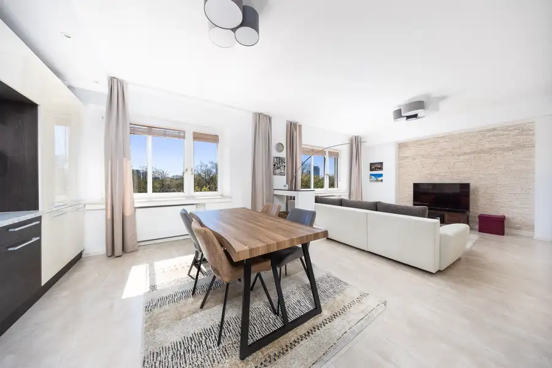
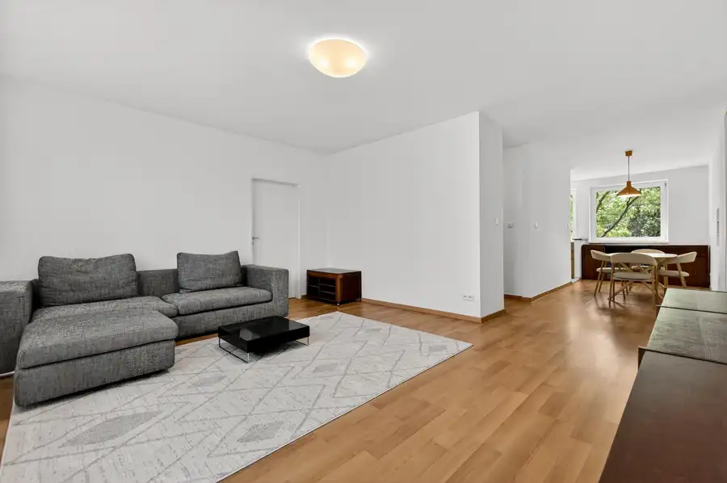

Aktuálna ponuka
6 nehnuteľností, predovšetkým byty, pozemky. Každá má vlastnú stránku s fotkami, popisom a mapou.
Prezrieť ponukuRastislav MichalčíkRealitný maklér
Realitný maklér · MIKELSSEN
Predaj a prenájom nehnuteľností · Bratislava, Svätý Jur

 BytNové10
290 000 €MIKELSSEN - Na predaj 2 izbový byt s nádherným výhľadom v novostavbe PREMIÉRE
Staré Mesto, Bratislava
2-izbový51 m²10. podlažie
Realitná kancelária MIKELSSEN ponúka exkluzívne na predaj príjemný 2 izbový byt v projekte PREMIÉRE na Šancovej ulici . Nehnuteľnosť s celkovou…
BytNové10
275 000 €MIKELSSEN - Na predaj 2 izbový byt s možnosťou zmeny na 3 izbový v centre mesta
Staré Mesto, Bratislava
2-izbový62.5 m²6. podlažie
Realitná kancelária MIKELSSEN ponúka exkluzívne na predaj dispozične veľmi zaujímavý 2 izbový byt na Karadžičovej ulici. Byt sa nachádza na 5.…
BytNové10
599 000 €MIKELSSEN - Na predaj priestranný 4 izbový byt v lukratívnej časti historického centra mesta na Laurinskej ulici
Staré Mesto, Bratislava
4-izbový147 m²2. podlažie
Realitná kancelária MIKELSSEN ponúka exkluzívne na predaj jedinečnú investičnú príležitosť v podobe priestranného bytu, pripraveného pre klienta,…
BytNové10
290 000 €MIKELSSEN - Na predaj 2 izbový byt s nádherným výhľadom v novostavbe PREMIÉRE
Staré Mesto, Bratislava
2-izbový51 m²10. podlažie
Realitná kancelária MIKELSSEN ponúka exkluzívne na predaj príjemný 2 izbový byt v projekte PREMIÉRE na Šancovej ulici . Nehnuteľnosť s celkovou…
BytNové10
275 000 €MIKELSSEN - Na predaj 2 izbový byt s možnosťou zmeny na 3 izbový v centre mesta
Staré Mesto, Bratislava
2-izbový62.5 m²6. podlažie
Realitná kancelária MIKELSSEN ponúka exkluzívne na predaj dispozične veľmi zaujímavý 2 izbový byt na Karadžičovej ulici. Byt sa nachádza na 5.…
BytNové10
599 000 €MIKELSSEN - Na predaj priestranný 4 izbový byt v lukratívnej časti historického centra mesta na Laurinskej ulici
Staré Mesto, Bratislava
4-izbový147 m²2. podlažie
Realitná kancelária MIKELSSEN ponúka exkluzívne na predaj jedinečnú investičnú príležitosť v podobe priestranného bytu, pripraveného pre klienta,…
 Pozemok10
70 000 €MIKELSSEN - Na predaj pozemok v lese s možnosťou výstavby nad Svätým Jurom
Svätý Jur
2191 m²
Realitná kancelária MIKELSSEN ponúka exkluzívne na predaj pozemok na svahoch v severnej časti mesta Svätý Jur, v južnej časti lokality Prostredné. Na…
Pozemok10
70 000 €MIKELSSEN - Na predaj pozemok v lese s možnosťou výstavby nad Svätým Jurom
Svätý Jur
2191 m²
Realitná kancelária MIKELSSEN ponúka exkluzívne na predaj pozemok na svahoch v severnej časti mesta Svätý Jur, v južnej časti lokality Prostredné. Na…

Byt10 1 250 €MIKELSSEN - Na prenájom priestranný 3 izbový byt v historickom centre s výhľadom na Dunaj Staré Mesto, Bratislava 3-izbový96 m²5. podlažie Realitná kancelária MIKELSSEN ponúka exkluzívne na prenájom zrekonštruovaný a kompletne zariadený 3 izbový byt v historickom dome na Kúpeľnej ulici.…
Byt10 1 650 €MIKELSSEN - Na prenájom výnimočný 4 izbový byt s výhľadom na Bratislavský hrad Staré Mesto, Bratislava 4-izbový109 m²3. podlažie Realitná kancelária MIKELSSEN ponúka exkluzívne na prenájom výnimočný 4 izbový byt v prémiovej lokalite Staré Mesto - Palisády. Byt sa nachádza na 2.…Tomuto výberu zatiaľ nezodpovedá žiadna ponuka. Napíšte mi, čo hľadáte.
Volám sa Rastislav Michalčík. Som realitný maklér kancelárie MIKELSSEN a pôsobím predovšetkým v lokalitách Bratislava a Svätý Jur (Bratislavský kraj).
6 nehnuteľností, predovšetkým byty, pozemky. Každá má vlastnú stránku s fotkami, popisom a mapou.
Prezrieť ponukuBratislava, Svätý Jur a okolie. Ponuku si môžete prezrieť podľa lokality.
Nehnuteľnosti v lokaliteOdhad trhovej ceny, príprava prezentácie, obhliadky, zmluvy a odovzdanie nehnuteľnosti.
Dohodnúť stretnutieKaždý špendlík je jedna nehnuteľnosť z mojej ponuky. Kliknite a pozrite sa.
© prispievatelia OpenStreetMap
Na čo sa pýtate najčastejšie, skôr než sa stretneme.
Odhad trhovej ceny vychádza z aktuálnych ponúk a predajov v lokalite, nie z cenníkových tabuliek. Podmienky Vám poviem pri prvom telefonáte.
Najprv obhliadka a odhad ceny, potom príprava prezentácie (fotografie, popis, inzercia), obhliadky so záujemcami, rezervačná zmluva, kúpna zmluva, návrh na vklad do katastra a odovzdanie nehnuteľnosti. O každom kroku viete vopred.
Najrýchlejšie cez WhatsApp alebo telefón. Termín stretnutia alebo obhliadky dohodneme podľa Vás.